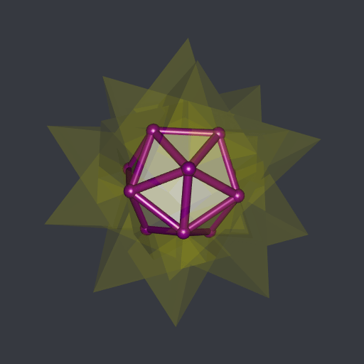

Boolean operations on meshes with R(CGAL)
I’m still working on my package RCGAL, that I already present in a previous post.
This previous post was about the reconstruction of surfaces. Now I implemented the Boolean operations on meshes. Here are some simple examples.
Union of two cubes:
Intersection of two cubes (one rotated):
Difference of two cubes:
Intersection of a cube and a truncated icosahedron:
The code generating these plots is given in the RCGAL examples.
Now let’s turn to a more interesting example.
The compound of five tetrahedra
The compound of five tetrahedra is provided by RCGAL. These are five
tetrahedra in a pretty configuration, each centered at the origin. You
can get their meshes by typing tetrahedraCompound. This is a list with
two components: a field meshes providing for each tetrahderon its
vertices and its faces, and a field rglmeshes, similar to meshes but
these meshes are ready for plotting with the rgl package. Here it
is:
library(RCGAL)
library(rgl)
rglmeshes <- tetrahedraCompound[["rglmeshes"]]
open3d(windowRect = c(50, 50, 562, 562), zoom = 0.75)
bg3d("#363940")
colors <- hcl.colors(5, palette = "Spectral")
invisible(lapply(
1:5, function(i) shade3d(rglmeshes[[i]], color = colors[i])
))I wondered for a long time what is the intersection of these five tetrahedra. But I didn’t have any tool to compute it. Now I have. Let’s see.
# compute the intersection ####
inter <- MeshesIntersection(
tetrahedraCompound[["meshes"]], numbersType = "lazyExact", clean = TRUE
)
# plot ####
open3d(windowRect = c(50, 50, 562, 562), zoom = 0.75)
bg3d("#363940")
# first the five tetrahedra with transparency ####
invisible(lapply(
rglmeshes, shade3d, color = "yellow", alpha = 0.1
))
# now the intersection ####
rglinter <- tmesh3d(
"vertices" = t(inter[["vertices"]]),
"indices" = t(inter[["faces"]]),
"homogeneous" = FALSE
)
shade3d(rglinter, color = "gainsboro")
# and finally the edges ####
plotEdges(
inter[["vertices"]], inter[["exteriorEdges"]],
only = inter[["exteriorVertices"]], color = "darkmagenta"
)Here is the result:

This is an icosahedron, I think.
Unfortunately, R CMD CHECK still throws some warnings which prevent me to publish this package on CRAN. I hope this issue will be solved.